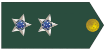

Hierarquia militar do Brasil
| Patentes | Descrição |
|---|---|
|
Soldado 
|
O termo "Soldado" para designar o posto mais baixo e/ou inicial da categoria de marinheiro, praças das componentes terrestres e aéreas das forças armadas e/ou Armada(Marinha). |
|
Cabo |
Cabo é uma graduação existente em várias forças armadas e forças de segurança, normalmente correspondendo à primeira ou segunda graduação que pode ser obtida por um soldado. O termo "cabo" vem do Latim "caput" (cabeça), usado com o significado genérico de "chefe". Em outros países, o mesmo termo latino, com o sentido de chefe, evoluiu para "caporal" |
|
Terceiro Sargento |
O 3º Sargento é a graduação mais operacional de um sargento, por ser a posição inicial da carreira, operacionalmente ele é o líder das pequenas frações (grupo de combate). |
|
Segundo Sargento |
O 3º Sargento é promovido a 2º Sargento após completar cerca de oito anos de serviço como 3º Sargento. Pode assumir funções administrativa e após concluído o Curso de Aperfeiçoamento de Sargentos, pode assumir a função de Adjunto de Pelotão. |
|
Primeiro Sargento |
O 1º Sargento é o de maior antiguidade (mais elevada precedência hierárquica) entre os sargentos. Possui no mínimo dezoito anos de carreira como sargento e pode servir de adjunto ao oficial comandante de uma companhia ou até mesmo chefiar um Tiro de Guerra (caso seja combatente). |
|
Subtenente 
|
Subtenente (pré-AO 1990: sub-tenente) é um posto ou graduação militar, existente nas forças armadas de diversos países. Conforme o país e o ramo das forças armadas, subtenente pode corresponder a um posto ou graduação das categorias de oficial, de oficial inferior ou de praça. |
|
Aspirante 
|
No Brasil, aspirante a oficial é a graduação dada à praça especial, antes do acesso ao oficialato, no posto inicial dos oficiais subalternos. Situa-se imediatamente acima das praças ou graduados (inclusive dos cadetes/alunos-oficiais), e abaixo do Segundo-tenente. |
|
Segundo Tenente 
|
Na hierarquia militar, Segundo-Tenente é o posto inicial do oficialato, fazendo parte do círculo dos oficiais subalternos no Brasil. Situa-se entre os postos de Aspirante e Primeiro-Tenente. Tenente é uma palavra de origem provavelmente francesa que significa substituto. A função do 2° Tenente é comandar um Pelotão. |
|
Primeito Tenente  |
Primeiro-tenente, na hierarquia militar do Brasil e de Portugal, é um posto do oficialato. Nas Forças Armadas do Brasil, o posto faz parte do círculo dos oficiais subalternos. No Exército, situa-se abaixo do de capitão e acima do de segundo-tenente; na Marinha, está abaixo de capitão-tenente e acima de segundo-tenente; na Força Aérea, está abaixo de capitão-aviador e acima de segundo-tenente. Sua função é comandar um Pelotão ou também pode exercer a função de oficial executivo de uma Companhia (militar). |
|
Capitão 
|
Capitão é um posto de oficial existente na maioria dos exércitos do mundo e ao qual corresponde, tradicionalmente, o comando de uma companhia de soldados. O posto de capitão, com as mesmas características, existe também em muitas forças aéreas e forças de segurança. |
|
Major 
|
Major é um posto militar, nas forças armadas e de segurança de vários países. Conforme o país, pode ter significados diferentes. Na maioria dos países, corresponde ao primeiro posto de oficial superior, sendo superior a capitão e inferior a tenente-coronel. No entanto, em outros países (como a França), a designação "major" é dada ao posto mais graduado de suboficial. |
|
Tenente Coronel |
Tenente-coronel é uma patente militar de oficial superior, situada entre a de major e a de coronel. Existe em quase todos os exércitos e forças aéreas do mundo, bem como em muitas outras forças militares, paramilitares ou de segurança. É equivalente à patente de capitão de fragata nas marinhas de Portugal e do Brasil. |
|
Coronel 
|
Coronel é uma patente militar de oficial existente em quase todos os exércitos do mundo. Esta patente é também utilizada em diversas forças aéreas e forças de segurança. Muito mais raramente, é utilizada em forças navais. Em quase todos os países onde a patente é utilizada, é a mais elevada de um oficial antes de atingir o generalato. |
|
General de Brigada 
|
General de brigada (pré-AO 1990: general-de-brigada) é um posto de oficial general, existente nas forças armadas e nas forças de segurança de diversos países. Normalmente, corresponde ao código OF-6 (general de uma estrela) ou ao código OF-7 (general de duas estrelas) da OTAN, situando-se hierarquicamente entre os postos de coronel e de general de divisão. Atualmente existem 97 generais de brigada na ativa no Exército Brasileiro. |
|
General de Divisão |
General de divisão (pré-AO 1990: general-de-divisão) é o posto intermediário entre general de brigada e general de exército. É usado nos exércitos brasileiro, espanhol e francês. Os generais de divisão, também chamados informalmente "generais de 3 estrelas", são aptos a comandar uma Divisão. Atualmente, existem quarenta e oito cargos de general de divisão no Exército Brasileiro. |
|
General do Exército 
|
General de exército (pré-AO 1990: general-de-exército) é um título usado em vários países para designar um oficial general, nominalmente, encarregado de comandar um exército em campanha. Nos países onde existe, o posto de general de exército é, normalmente, a maior patente militar em tempo de paz. |
|
Marechal |
Marechal é o posto de maior patente no exército e na força aérea, sendo superior aos dos restantes postos de oficial general. Normalmente, o posto naval equivalente é designado "almirante", "almirante da Armada" ou "almirante da frota". Geralmente, o posto de marechal é uma dignidade honorífica apenas atribuída aos generais com uma relevante folha de serviços em tempo de guerra. |